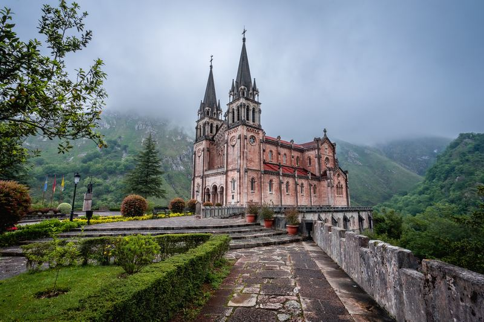
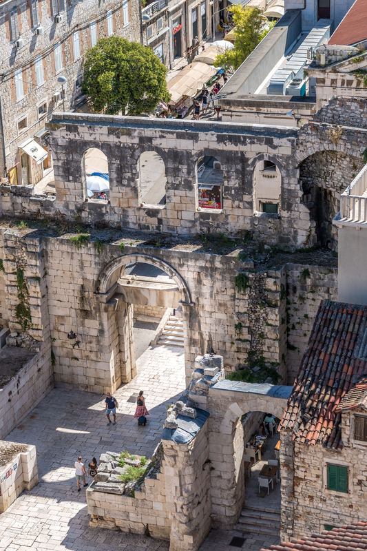
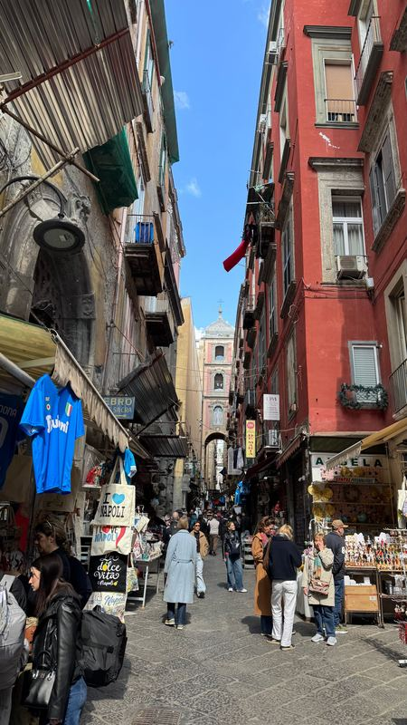
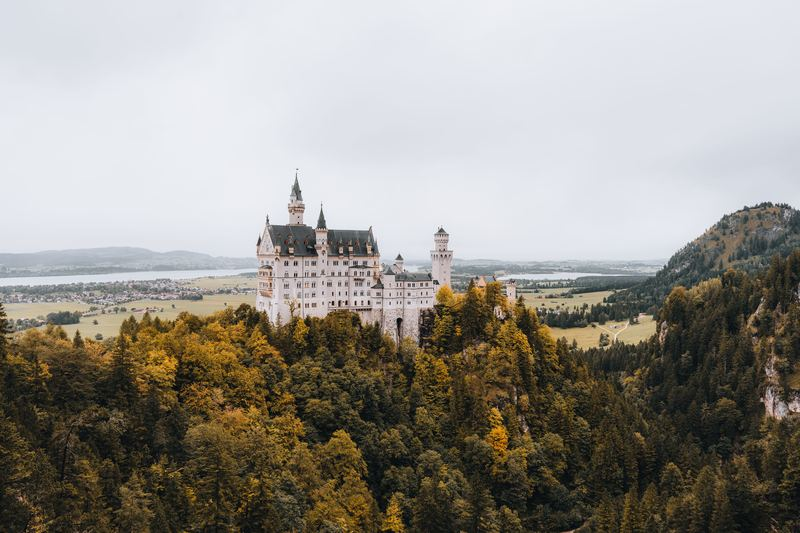
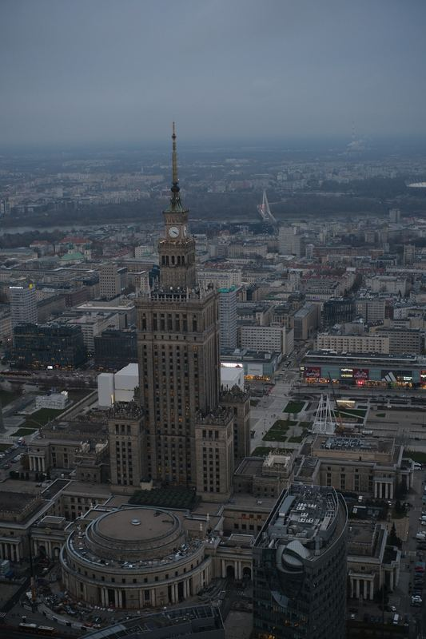
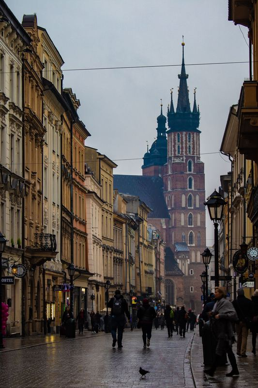

Fotos y lugares visitados
Una selección de lugares que he visitado y de momentos que quiero recordar.
-

feb. 2018, Santuario de Nuestra Señora de Covadonga (Asturias, España) -

jul. 2022, Split (Croacia) -

may. 2018, Nápoles (Italia) -

jul. 2022, Castillo de Neuschwanstein (Baviera, Alemania) -

jul. 2025, Varsovia (Polonia) -

jul. 2025, Cracovia (Polonia)